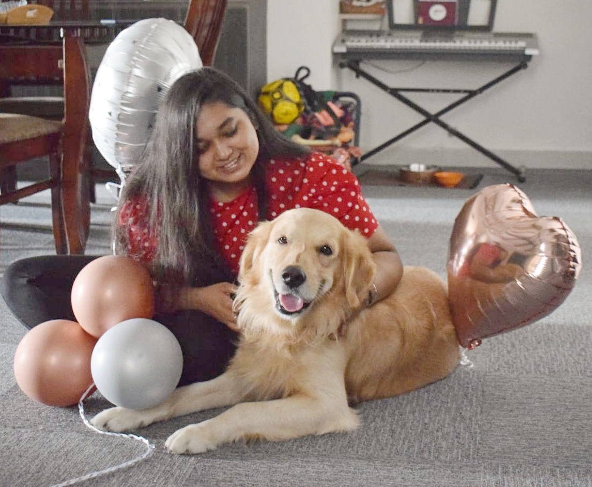

akunurla-About Me
LAASYA AKUNURU
Master's in Information Systems

I believe that proper management of such change is essential which can unfasten the potential to reach the best possible results. To attain a focused understanding
of people, technology, businesses and the relationship between them, I wish to pursue MSIS, as it is a perfect combination of these elements. I hope to master effective management
practices and broaden my technical skillset to make sure that I am competent to play a significant role in delivering Key Performance Indicators that the trade expects. This program will enable me to
carve a niche for myself in the industry along with deepening my expertise and broadening my
perspectives.
| Day |
Class |
Time |
| Monday |
IS 7020 - System Analysis & Design |
18:00 - 21:50 |
| Tuesday |
Free |
18:00 - 21:50 |
| Wednesday |
IS 7030 - Data Modeling |
18:00 - 21:50 |
| Thursday |
BANA 6043 - Statistical Computing |
18:00 - 21:50 |
| Friday |
BA 7077 - Career Management |
12.20 - 13.15 |
| Saturday |
IS 7012 - Web Development & .NET |
09:00 - 12.50 |
CAREER OBJECTIVES
Given the confluence of my personal and professional interests, my goal is to obtain a master's
degree and then to work in an IT-related industry. When I have gathered enough experience
and skills, I plan to launch a consulting company of my own. This program will enable me to
carve a niche for myself in the industry along with deepening my expertise and broadening my
perspectives.
- SAP MDG Techno-Fucntional Consultant
- ABAP Consultant
- ERP Data Analyst
- ERP Consultant
STRENGTHS
- Naturally inquisitive and observant
- Dependable resource with efficient time management and prioritisation skills
- Can work across parallels in technical and functional domains
HOBBIES
-
Playing Keyboard gives me a sense of peace and happiness. Music has always been in our family, and playing instruments brings out the fun element. You can listen to some of the best renditions of someo of my favourite songs in this playlist - Best Piano Covers
-
Writing. I really enjoy writing crime fiction and short stories. A lot of my inspiration comes from reading a lot of books. Most of the articles I enjoy reading are from an App called Medium - Medium